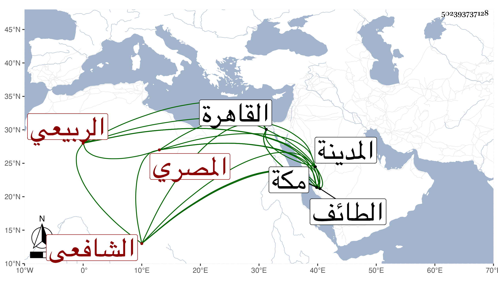

0902Sakhawi.DawLamic.ITO20230111-ara1.EIS1600.502393737128
Biography ID: 502393737128
أحمد بن أحمد بن عبد الله الشهاب الربيعي المصري الشافعي نزيل مكة أقام بها يشتغل عند المسيري ثم غيره كالشرف عبد الحق السنباطي ولازمني حين المجاورة الثالثة ثم قدم القاهرة في سنة ثمان وثمانين رجاء لوفاء دينه وصار يحضر عندي أحيانا وعند الجوجري وعبد الحق ويكثر التردد للمجد القلعي بجامعها وعاد لمكة ثم سافر منها إلى الطائف فدام به قليلا وكذا أقام بالمدينة يسيرا .
